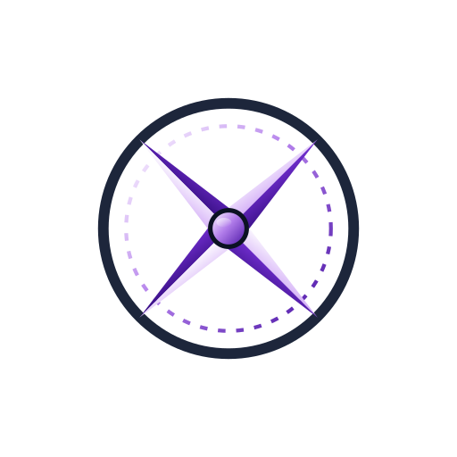
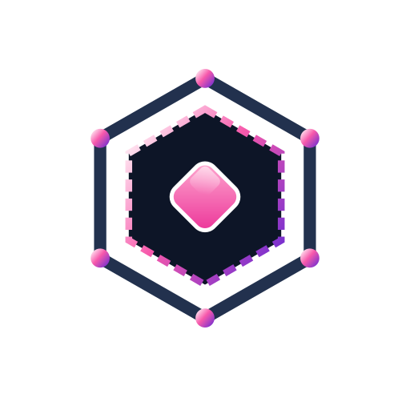
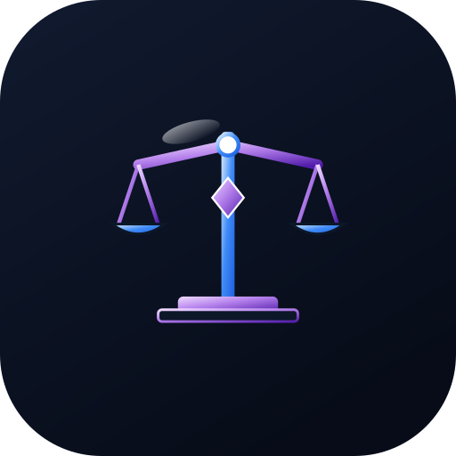

CAIRN ETP produces technical and record-keeping evidence relevant to the obligations placed on High-Risk AI Systems (Articles 9–15). The mapping below is a starting point for a conversation with your assessor — compliance is a property of your organisation, established by an auditor, not of a tool.
| EU AI Act Mandate | Regulatory Requirement | CAIRN ETP Implementation & Pillar Mapping |
|---|---|---|
| Article 9 | Risk Management System Continuous, iterative risk identification and mitigation across the entire AI agent lifecycle. |
Pillar 01 (CAIRN)
Pillar 02 (PATH)
AST scan checks and default-deny gatekeepers evaluate and block high-risk execution vectors prior to model invocation. |
| Article 10 | Data & Data Governance Strict data provenance, authorized context boundaries, and protection against bias/poisoning. |
Pillar 05 (ATLAS)
Versioned document grounding with deterministic vector retrieval ensuring strict context authorization. |
| Article 12 | Record-Keeping & Traceability Automatic, tamper-evident recording of events, decisions, and system logs throughout system operation. |
 Pillar 04 (COMPASS)SHA-256 hash-chained decision records with signed checkpoints, tracking inputs, context hashes and the decision reached. |
| Article 14 | Human Oversight Ability for human operators to intervene, override, or halt automated AI agent execution safely. |
Pillar 03 (BEACON)
Real-time telemetry broadcasting coupled with configurable human-in-the-loop (HITL) authorization gates. |
| Article 15 | Cybersecurity & Accuracy Resilience against unauthorized access, prompt injection, data exfiltration, and unexpected agent drift. |
 Pillar 07 (CRUCIBLE)
Tool execution is contained in a Docker container or a Windows Sandbox micro-VM with no network ( |
CAIRN ETP maps directly across the four core functions of the NIST AI RMF, enabling organizations to manage risks associated with agentic AI systems.

GOVERN GV-1.1 to GV-4.3Establishes organizational AI governance processes, transparent risk tolerance boundaries, and default-deny execution policies.
Contextualizes organizational risk by mapping data lineage, model dependencies, and institutional knowledge inputs.
Continuously quantifies, monitors, and evaluates AI system behavior, tool accuracy, and compliance posture.
cairn trace) enable independent verification by internal risk teams.Allocates risk mitigation resources, enforces deterministic runtime boundaries, and isolates tool actions.
CAIRN ETP provides infrastructure that supports an organisation implementing and maintaining an ISO/IEC 42001 AI management system. The certification is the organisation’s, not CAIRN’s.
| Control Clause | Framework Focus | How CAIRN ETP Enforces Compliance |
|---|---|---|
| Annex A.5 | AI Impact Assessment Systematic assessment of consequences for automated decision-making. |
Deterministic AST Validation: Scores execution risk vectors prior to execution, generating audit evidence for impact reporting. |
| Annex A.6 | AI System Lifecycle Governance across development, deployment, and operational runtime stages. |
Policy-as-Code Engine: Standardized policy definitions enforced uniformly across local workstations, enterprise clusters, and sovereign nodes. |
| Annex A.8 | Data for AI Systems Assurance regarding validity, quality, and authorization of RAG context. |
Evidence Fabric: Records which retrieved context informed a decision, so an answer can be traced back to the documents behind it. |
| Annex A.9 | Traceability & Transparency System auditability and explainability for external regulators. |
Cryptographic Event Ledgers: Hash-chained audit trails with signed checkpoints, exportable as evidence a third party can verify independently. |
In addition to dedicated AI frameworks, CAIRN ETP reinforces existing enterprise security and banking standards.
audit.export) that an auditor can verify without running CAIRN, supporting your own evidence for the Security, Availability and Confidentiality criteria. CAIRN itself holds no SOC 2 attestation.